25+ Easy New Year's Eve Appetizers for a Crowd
📌 Save to Pinterest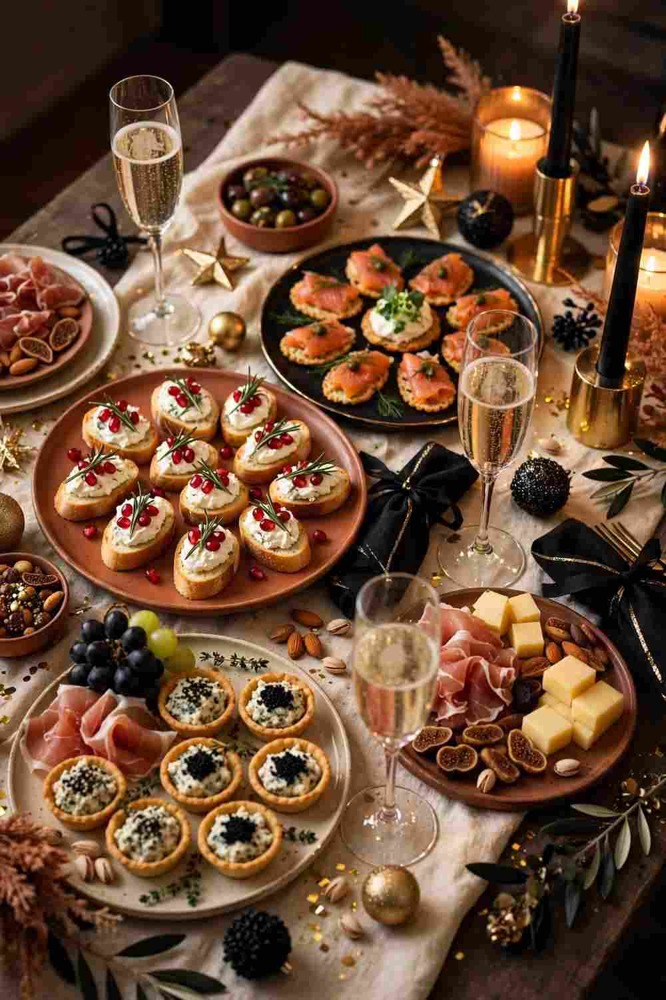
New Year's Eve is the one night of the year when the appetizers are the meal: small bites, passed around and piled on plates, while everyone counts down together. This roundup gathers twenty-five easy New Year's Eve appetizers for a crowd — dips, skewers, sliders, meatballs and finger foods — all made to feed a room full of guests without keeping you in the kitchen. Make the dips and the slow-cooker meatballs ahead, bake the hot bites as guests arrive, and the table takes care of itself.
How to plan a New Year's Eve appetizer table
Pick a mix, not a single style: two or three dips for grazing, a few hot bites that come out of the oven in batches, and a few no-cook plates — skewers, roll-ups and stuffed dates — that wait in the fridge until you need them. If the night is long, lean on slow-cooker recipes like the grape jelly meatballs, which stay warm all evening. And if you want the table to feel like a party before midnight, set it with gold and black — dark napkins, gold platters and a few candles — and let the food do the rest.
Good to know: Everything is written in American English, and measurements use US customary units — cups, tablespoons, and Fahrenheit — for cooks in the United States. Always follow safe food-handling guidance, and check labels for allergens when cooking for others.
Food safety: cook poultry to 165°F (74°C) and ground beef to 160°F (71°C). Cook beef tenderloin to 145°F (63°C) and let it rest for 3 minutes. Check with a food thermometer.
Elegant starters & party dips
Start with the showpieces — chilled shrimp, flaky pastry and salmon blini — then set out two dips so guests can graze while the first drinks are poured.
1. Classic Shrimp Cocktail Cups
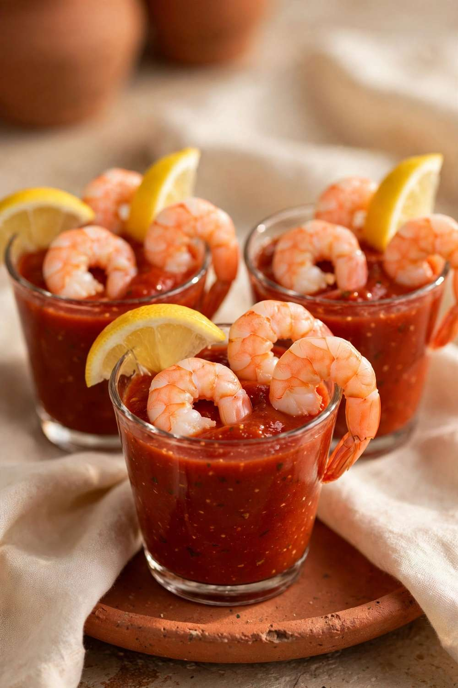
Chilled shrimp in cups with zesty sauce.
Ingredients
- 1 lb large shrimp, peeled and deveined
- 1 cup cocktail sauce
- 1 tbsp prepared horseradish
- 1 lemon, cut into wedges
- fresh parsley
- 1 tbsp Old Bay seasoning
Directions
- Bring a pot of water with Old Bay to a boil.
- Cook shrimp 2 minutes until pink, then chill in ice water.
- Stir horseradish into the cocktail sauce.
- Serve shrimp in small cups with sauce and a lemon wedge.
2. Mini Beef Wellington Bites

Flaky pastry, tender beef, mushroom duxelles.
Ingredients
- 1 lb beef tenderloin
- 1 sheet puff pastry
- 1 cup finely chopped mushrooms
- 2 tbsp Dijon mustard
- 1 egg, beaten
- salt and pepper
Directions
- Sear beef on all sides and brush with mustard.
- Cook mushrooms until dry and spread over the beef.
- Wrap in puff pastry, brush with egg and bake at 400°F for 20 minutes.
- Slice into bites.
Food safety: cook the beef to 145°F (63°C) and let it rest for 3 minutes before slicing.
3. Smoked Salmon Blini with Dill Cream
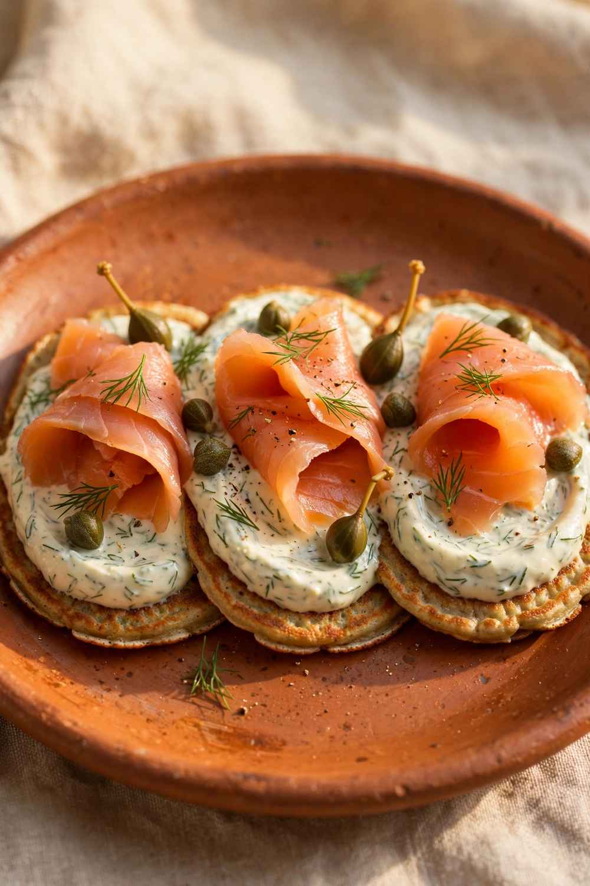
Elegant little pancakes with salmon.
Ingredients
- 1 cup pancake mix
- 8 oz smoked salmon
- 1/2 cup sour cream
- 2 tbsp chopped dill
- 1 tbsp lemon juice
- capers
Directions
- Make small blini from the pancake mix, about 2 inches wide.
- Whisk sour cream with dill and lemon juice.
- Top each blini with cream, folded salmon and capers.
4. Buffalo Chicken Dip

Creamy, spicy, made for scooping.
Ingredients
- 2 cups shredded cooked chicken
- 8 oz cream cheese
- 1/2 cup buffalo sauce
- 1/2 cup ranch dressing
- 1 cup shredded cheddar
Directions
- Mix chicken, cream cheese, buffalo sauce and ranch in a baking dish.
- Top with cheddar and bake at 350°F for 20 minutes until bubbly.
- Serve with celery sticks and tortilla chips.
5. Seven-Layer Taco Dip
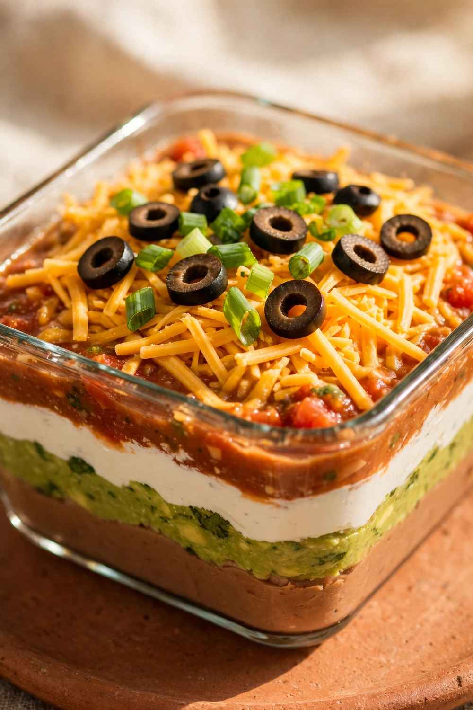
Every layer a crowd favorite.
Ingredients
- 1 can (16 oz) refried beans
- 1 cup sour cream
- 1 packet taco seasoning
- 1 cup guacamole
- 1 cup salsa
- 1 cup shredded cheddar
- 1/2 cup sliced black olives
- 2 green onions
Directions
- Spread beans in a serving dish.
- Mix sour cream with taco seasoning and layer on top.
- Add guacamole, salsa, cheddar, olives and green onions.
- Chill 30 minutes before serving.
Warm dips, poppers & skewers
The warm, scoopable half of the table: baked dips, crispy poppers, golden crab cakes and grilled skewers.
6. Jalapeño Popper Dip

All the popper flavor, no stuffing.
Ingredients
- 8 oz cream cheese
- 1 cup shredded cheddar
- 1/2 cup mayonnaise
- 4 jalapeños, seeded and diced
- 1/2 cup panko breadcrumbs
- 2 tbsp melted butter
Directions
- Mix cream cheese, cheddar, mayonnaise and jalapeños in a baking dish.
- Top with panko tossed in butter.
- Bake at 375°F for 20 minutes until golden and bubbly.
7. Warm Crab Dip

Rich, cheesy, straight from the oven.
Ingredients
- 8 oz lump crab meat
- 8 oz cream cheese
- 1/2 cup mayonnaise
- 1/2 cup grated Parmesan
- 1 tbsp lemon juice
- 1 tsp Old Bay seasoning
Directions
- Mix all ingredients gently in a baking dish.
- Bake at 350°F for 25 minutes until hot and bubbly.
- Serve with toasted baguette slices.
8. Bacon-Wrapped Jalapeño Poppers

Smoky, creamy, a little heat.
Ingredients
- 12 jalapeños, halved and seeded
- 8 oz cream cheese
- 1 cup shredded cheddar
- 12 slices bacon, cut in half
Directions
- Fill each jalapeño half with cream cheese and cheddar.
- Wrap with half a slice of bacon and secure with a toothpick.
- Bake at 400°F for 20 minutes until bacon is crisp.
Food safety: cook the bacon until crisp.
9. Mini Crab Cakes with Remoulade

Golden cakes, tangy sauce.
Ingredients
- 1 lb lump crab meat
- 1/2 cup breadcrumbs
- 1 egg
- 2 tbsp mayonnaise
- 1 tbsp Dijon mustard
- 1/2 cup mayonnaise for remoulade
- 1 tbsp lemon juice
- 1 tsp Cajun seasoning
Directions
- Mix crab, breadcrumbs, egg, mayonnaise, mustard and seasoning; form small patties.
- Pan-fry in oil 3 minutes per side until golden.
- Whisk remoulade ingredients and serve alongside.
10. Chicken Satay Skewers with Peanut Sauce

Grilled, nutty, party-ready.
Ingredients
- 1 1/2 lbs chicken tenders
- 1/4 cup soy sauce
- 2 tbsp peanut butter
- 1 tbsp honey
- 1 tbsp lime juice
- 1 tsp curry powder
- 1/2 cup peanut sauce for dipping
Directions
- Marinate chicken in soy sauce, peanut butter, honey, lime and curry powder for 30 minutes.
- Thread onto skewers and grill 3 minutes per side.
- Serve with peanut sauce.
Food safety: cook the chicken to 165°F (74°C) — check with a food thermometer.
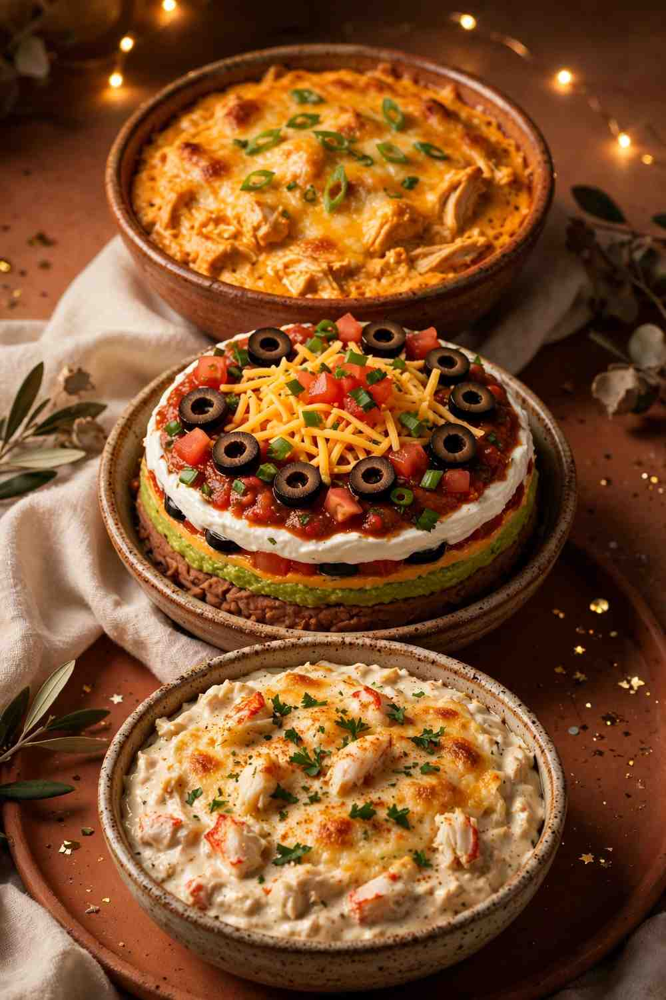
Meatballs, sliders & party classics
The hearty bites — meatballs, sliders, deviled eggs, stuffed dates and wings — the ones guests come back for.
11. Sticky Teriyaki Meatballs

Sweet glaze, one bite each.
Ingredients
- 1 lb ground beef
- 1/2 cup breadcrumbs
- 1 egg
- 2 green onions
- 1/2 cup teriyaki sauce
- 1 tbsp sesame seeds
Directions
- Mix beef, breadcrumbs, egg and green onions; roll into 1-inch balls.
- Bake at 400°F for 15 minutes.
- Toss with warm teriyaki sauce and sprinkle with sesame seeds.
Food safety: cook the ground beef to 160°F (71°C) — check with a food thermometer.
12. Mini Sliders with Caramelized Onions
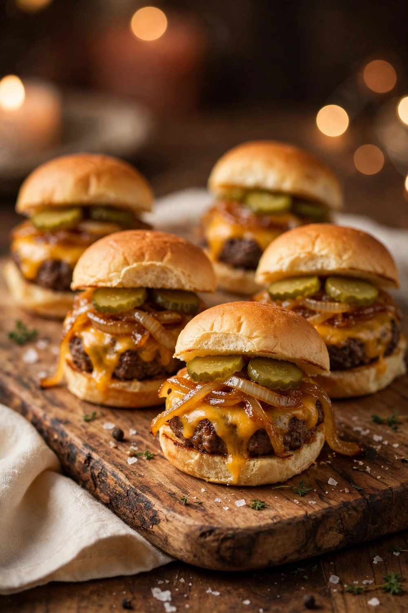
Little burgers, big flavor.
Ingredients
- 1 lb ground beef
- 12 slider buns
- 2 onions, sliced
- 2 tbsp butter
- 6 slices cheddar, cut in quarters
- pickles
Directions
- Cook onions in butter over low heat for 20 minutes until golden.
- Form small patties and cook 3 minutes per side.
- Assemble with cheese, onions and pickles.
Food safety: cook the ground beef to 160°F (71°C) — check with a food thermometer.
13. Deviled Eggs with Smoked Paprika
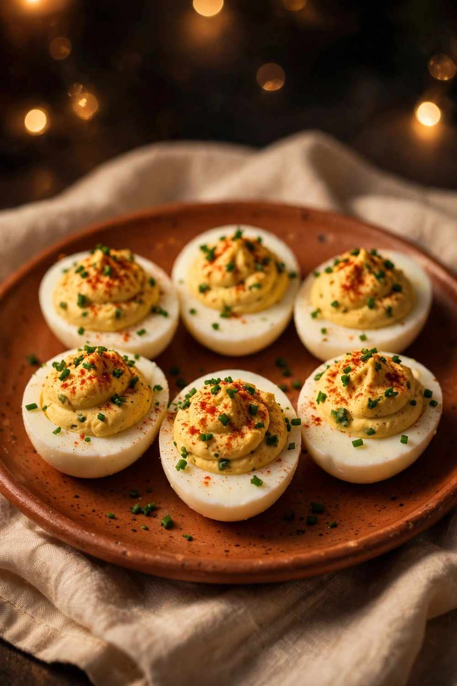
A party classic, dressed up.
Ingredients
- 12 eggs
- 1/2 cup mayonnaise
- 1 tbsp Dijon mustard
- 1 tbsp sweet pickle relish
- smoked paprika
- chopped chives
Directions
- Boil eggs 10 minutes, cool and peel.
- Halve and mash yolks with mayonnaise, mustard and relish.
- Pipe back into whites and dust with paprika and chives.
14. Blue Cheese and Walnut Stuffed Dates

Sweet, salty, crunchy.
Ingredients
- 24 pitted Medjool dates
- 4 oz blue cheese
- 1/2 cup chopped walnuts
- 2 tbsp honey
Directions
- Slice dates open and remove pits.
- Fill with blue cheese and a walnut piece.
- Drizzle lightly with honey before serving.
15. Garlic Parmesan Wings

Crispy wings, no fryer needed.
Ingredients
- 2 lbs chicken wings
- 2 tbsp olive oil
- 1 tsp garlic powder
- 1/2 cup grated Parmesan
- 3 tbsp melted butter
- parsley
Directions
- Toss wings with oil, garlic powder, salt and pepper.
- Bake at 425°F for 40 minutes, flipping once.
- Toss with butter, Parmesan and parsley.
Food safety: cook the chicken wings to 165°F (74°C) — check with a food thermometer.
Crispy bites, bruschetta & breads
Crunchy, fresh and baked: calamari, bruschetta, mini tacos, cheesy bread bites and a New Year's classic.
16. Crispy Fried Calamari with Lemon Aioli
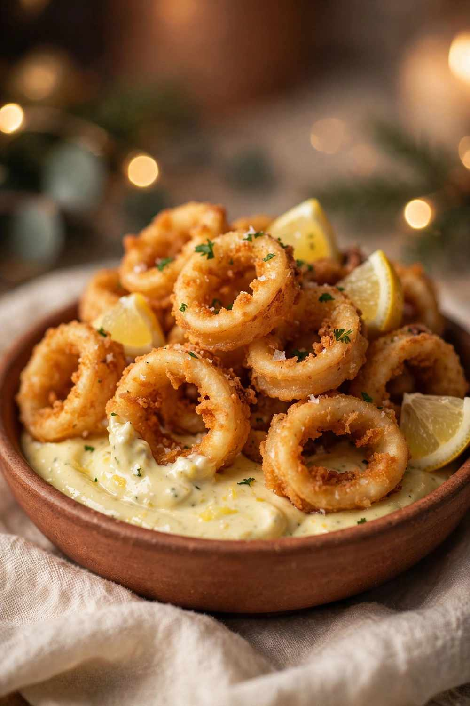
Light, golden rings.
Ingredients
- 1 lb calamari rings
- 1 cup flour
- 1 tsp paprika
- 1/2 tsp garlic powder
- oil for frying
- 1/2 cup mayonnaise
- 1 tbsp lemon juice
- 1 garlic clove
Directions
- Toss calamari in seasoned flour.
- Fry in hot oil for 2 minutes until golden; drain well.
- Whisk mayonnaise, lemon and garlic for the aioli.
17. Tomato Basil Bruschetta

Fresh, bright, gone in minutes.
Ingredients
- 1 baguette, sliced
- 4 tomatoes, diced
- 1/4 cup chopped basil
- 2 garlic cloves
- 3 tbsp olive oil
- 1 tbsp balsamic vinegar
Directions
- Toast baguette slices until golden.
- Rub with a cut garlic clove.
- Toss tomatoes with basil, oil and balsamic; spoon over toast.
18. Mini Tacos with Salsa Verde
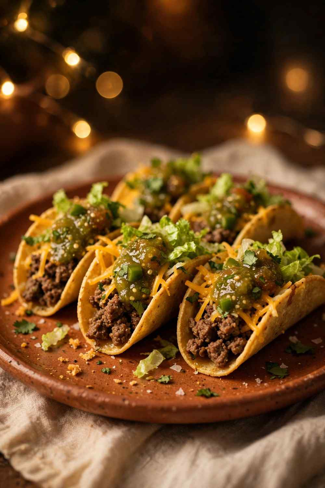
Crunchy shells, zesty filling.
Ingredients
- 12 mini taco shells
- 1 lb ground beef
- 1 packet taco seasoning
- 1 cup salsa verde
- 1/2 cup shredded lettuce
- 1/2 cup shredded cheddar
- sour cream
Directions
- Brown beef and stir in taco seasoning.
- Fill shells with beef, lettuce and cheddar.
- Top with salsa verde and a dollop of sour cream.
Food safety: cook the ground beef to 160°F (71°C) — check with a food thermometer.
19. Cheesy Pull-Apart Bread Bites

Gooey centers, golden crust.
Ingredients
- 1 can refrigerated biscuit dough
- 8 oz mozzarella, cut into cubes
- 3 tbsp melted butter
- 1 tsp garlic powder
- 1 tsp Italian seasoning
Directions
- Wrap each biscuit around a mozzarella cube and seal.
- Arrange in a greased baking dish and brush with butter, garlic powder and seasoning.
- Bake at 350°F for 20 minutes until golden.
20. Pigs in a Blanket with Honey Mustard
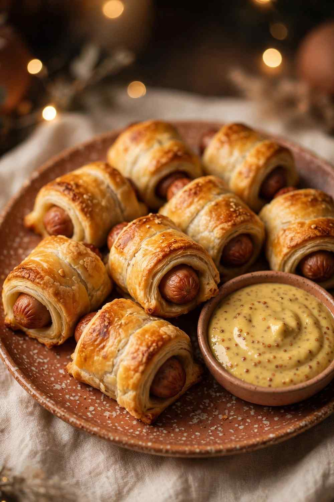
A New Year's classic.
Ingredients
- 1 can crescent roll dough
- 16 cocktail sausages
- 1 egg, beaten
- sesame seeds
- 1/2 cup honey mustard
Directions
- Cut dough into triangles and roll each around a sausage.
- Brush with egg and sprinkle sesame seeds.
- Bake at 375°F for 12 minutes.
- Serve with honey mustard.
Food safety: heat the cocktail sausages until steaming hot throughout.
Tartlets, skewers & sweet finishes
Finish with the elegant end of the table — tartlets, no-cook skewers, roll-ups, sweet sticky meatballs and buttery lobster rolls.
21. Mushroom and Gruyère Tartlets

Buttery shells, earthy filling.
Ingredients
- 1 sheet puff pastry
- 2 cups sliced mushrooms
- 1 cup shredded Gruyère
- 2 tbsp butter
- 1 tsp thyme
- 1 egg for wash
Directions
- Cook mushrooms in butter with thyme until dry.
- Cut pastry into squares and press into a mini muffin tin.
- Fill with mushrooms and Gruyère; bake at 375°F for 15 minutes.
22. Melon and Prosciutto Skewers

Sweet, salty, no cooking.
Ingredients
- 1 cantaloupe, cut into balls
- 8 oz prosciutto
- 1 cup bocconcini
- fresh mint leaves
- 1 tbsp honey
Directions
- Thread a melon ball, a fold of prosciutto and a bocconcini onto each skewer.
- Add a mint leaf and drizzle lightly with honey.
- Chill until serving.
23. Dill Pickle Roll-Ups

Creamy, tangy, bite-size.
Ingredients
- 8 oz cream cheese, softened
- 8 slices deli ham
- 8 whole dill pickles
- 1 tbsp chopped dill
Directions
- Spread cream cheese over each ham slice.
- Roll tightly around a pickle and chill 30 minutes.
- Slice into pinwheels.
24. Grape Jelly Cocktail Meatballs

Sweet, sticky, retro party favorite.
Ingredients
- 1 lb frozen meatballs
- 1 cup grape jelly
- 1 cup chili sauce
- 1 tbsp Worcestershire sauce
Directions
- Simmer grape jelly, chili sauce and Worcestershire in a slow cooker until smooth.
- Add meatballs and cook on low for 2 hours.
- Serve warm with toothpicks.
Food safety: heat the meatballs until steaming hot throughout.
25. Mini Lobster Rolls
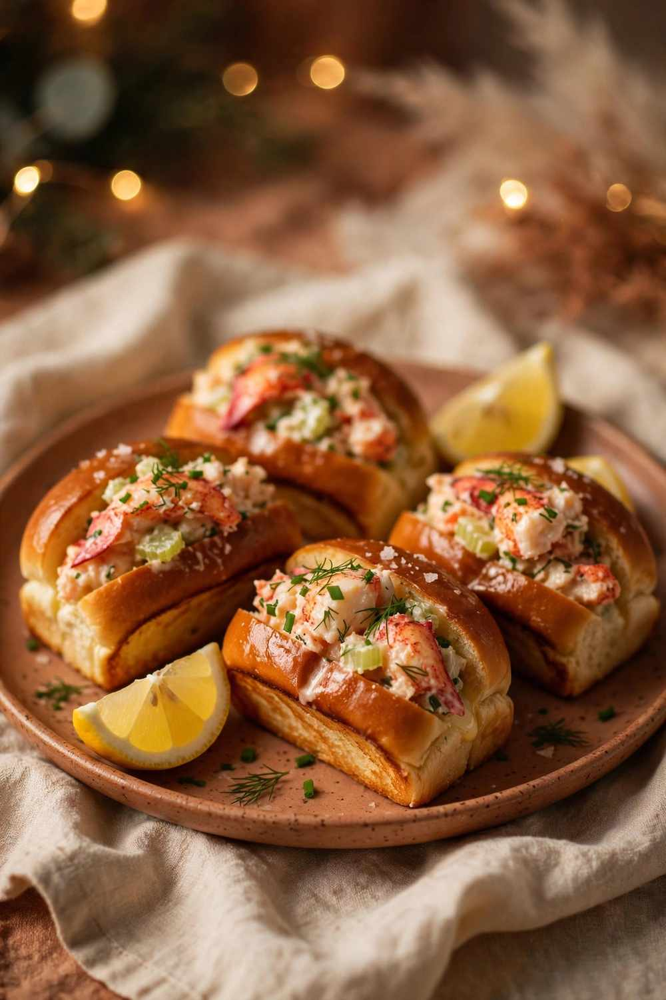
Buttery buns, sweet lobster.
Ingredients
- 1 lb cooked lobster meat
- 1/4 cup mayonnaise
- 1 tbsp lemon juice
- 1 celery stalk, finely diced
- 8 mini hot dog buns
- 2 tbsp melted butter
Directions
- Toss lobster with mayonnaise, lemon and celery.
- Butter buns and toast until golden.
- Fill each bun with lobster and serve right away.

Make-ahead & serving tips
Make the dips a day ahead — buffalo chicken dip, seven-layer taco dip and jalapeño popper dip all keep well covered in the fridge, and the layered dip only gets better overnight. Start the grape jelly meatballs in the slow cooker in the afternoon and leave them on warm until midnight. Bake the hot bites — wings, poppers, sliders and tartlets — in batches as guests arrive, and keep finished trays warm on a low oven rack. Set out toothpicks, small plates and napkins at both ends of the table so nobody has to cross the room, and put a little card next to anything with nuts, shellfish or spice so guests with allergies can choose easily. Most leftovers keep covered in the fridge for up to 3 days.
Related articles
More roundups from the same table:
- 35+ Easy Christmas Appetizers for a Crowd — dips, bites, cheese boards and warm starters for your holiday party.
- 30+ Christmas Cookie Recipes Everyone Will Love — classic, chocolate, spiced, filled and decorated cookies.
- 25+ Christmas Side Dishes for Your Holiday Table — roasted vegetables, creamy potatoes, stuffing and cranberry sauce.
- 25+ Christmas Snowball Cookie Recipes — buttery snowball cookies in every flavor.
Keep exploring
- Browse the Appetizers & Snacks roundups — starters, party bites and snacks for every gathering.
- Browse all six categories — breakfast, lunch and dinner, desserts, air fryer, healthy recipes, and appetizers.
- More about the kitchen — what The Tasty Recipe Co is and how it works.
About The Tasty Recipe Co: Learn how we research, organize and review our food collections — see our About Us and Editorial Policy pages.
Recipe results can vary with ingredients, equipment, and technique. See our Disclaimer for food-safety and allergy notes.